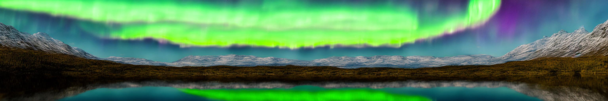
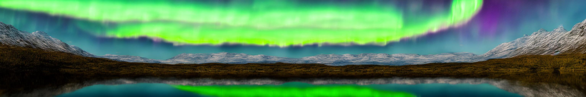

Results
Higher-Resolution Synthsized Images with SD XL
Utilizing a pretrained model trained on a resolution of 1024 x 1024, our method can generate images with a resolution of up to 4096 x 4096 without the need for training/optimization.
Resolution: 4096x4096; Prompt: “Miniature house with plants in the potted area, hyper realism, dramatic ambient lighting, high detail”

Resolution: 4096x4096; Prompt: “Close up of a pair of vibrant koi fish swim upstream, surmounting a waterfall, oil painting style”

Resolution: 4096x4096; Prompt: “North sunset in Norway. Stunning sea view from mountains. Beautiful bay in evening sunlight. Lofoten islands landscape.”

Resolution: 4096x2048; Prompt: “A cherry blossom tree in full bloom amidst an arctic tundra showering petals on a polar bear”

Resolution: 4096x2048; Prompt: “baby succulents from ikea interior pinterest plants cacti and flora. Black Bedroom Furniture Sets. Home Design Ideas”
Resolution: 4096x2048; Prompt: “Handmade Watercolor Painting, home decor”

Resolution: 4096x2048; Prompt: “Placemats Sunflower Summer Landscape Heat Stain Resistant Non-Slip Place Mats for Kitchen Dining Table 12 x 18 Inch 4 Pc”

Resolution: 4096x2048; Prompt: “Spring Magnolia and Thistle bouquet. Featuring bronze magnolia leaves, woodland greeneries, pussywillow, blush, scarlet and pink peonies, cream roses, sea holly thistle and cream, gold and navy ribbons..jpg”

Resolution: 2048x2048; Prompt: “16 Inch Anime The Jungle Book Backpack For Teenagers Boys Girls School Bags Travel Bag Children School Backpacks Gift”
Higher-Resolution Synthsized Videos with Latent Video Diffusion Models
Utilizing a pretrained model trained on a resolution of 512 x 320, our method can generate videos of 1024 x 640 resolution without the need for training/optimization.
Resolution: 1024x640; Prompt: “Ironman is fighting against the enemy, big fire in the background, photorealistic, 4k”
Resolution: 1024x640; Prompt: “A solemn tortoise slowly ambles along, carrying its home on its back.”
Resolution: 1024x640; Prompt: “A charming raccoon stealthily rummages through a homeowner's trash can.”
Resolution: 1024x640; Prompt: “A panda playing on a swing set”
Resolution: 1024x640; Prompt: “Close up of grapes on a rotating table. High Definition.”
Resolution: 1024x640; Prompt: “A fat rabbit wearing a purple robe walking through a fantasy landscape.”
Resolution: 1024x640; Prompt: “Teddy bear walking down 5th Avenue, front view, beautiful sunset, close up, high definition, 4k.”
Higher-Resolution Synthsized Images with SD 2.1
Utilizing a pretrained model trained on a resolution of 512 x 512, whlie our method can generate images with a resolution of up to 2048 x 2048 without the need for training/optimization.
Resolution: 2048x2048; Prompt: “HDR Image of Yosemite Falls”
Resolution: 2048x2048; Prompt: "Maine Coon"
Resolution: 2048x2048; Prompt: “Picture the sky, stones, Norway, Mountain Sunrice”
Resolution: 2048x2048; Prompt: “winter sunset lighthouse snow iceland”
Resolution: 2048x1024; Prompt: “A corgi sits on a beach chair on a beautiful beach, with palm trees behind, high details"
Resolution: 2048x1024; Prompt: "A car in a garden, with a lake and Eiffel Tower”
Resolution: 2048x1024; Prompt: "a photo of wonder woman"
Resolution: 2048x1024; Prompt: "The winding Great Wall of China in autumn"
Resolution: 2048x1024; Prompt: "A Cute Puppy with wings, Cartoon Drawings, high details"
Resolution: 2048x1024; Prompt: "A photo of a raccoon wearing an astronaut helmet, looking out"
Resolution: 2048x1024; Prompt: "A Cute Puppy with wings, in sky, photorealistic, high detail"
Resolution: 2048x1024; Prompt: "Sushi Roll on a wooden table"
Resolution: 1024x1024; Prompt: “photo of a cat holding a pineapple”
Resolution: 1024x1024; Prompt: “A rabbit is skateboarding in Time Square”

Resolution: 1024x1024; Prompt: “cherry with water splashed in all directions in a bowl”
Resolution: 1024x1024; Prompt: “A rabbit is riding a bicycle in New York Street”
Resolution: 2048x2048; Prompt: “Stack coins with plants to grow into steps”
Higher-Resolution Synthsized Images with SD 1.5
Utilizing a pretrained model trained on a resolution of 512 x 512, our method can generate images with a resolution of up to 2048 x 2048 without the need for training/optimization.

Resolution: 2048x2048; Prompt: “A rustic wooden cabin nestled in a snowy forest”

Resolution: 2048x1024; Prompt: “A dog wearing a Superhero outfit with red cape flying through the sky”
Resolution: 2048x1024; Prompt: “A picturesque mountain scene with a clear lake reflecting the surrounding peaks”

Resolution: 2048x1024; Prompt: “A squirrel eating an acorn in a forest”

Resolution: 1024x1024; Prompt: “A beautiful sunset over a calm ocean with a lighthouse in the distance”

Resolution: 1024x1024; Prompt: “A butterfly landing on a sunflower”

Resolution: 1024x1024; Prompt: “A charming raccoon stealthily rummages through a homeowner's trash can”

Resolution: 1024x1024; Prompt: “A confused grizzly bear in calculus class”

Resolution: 1024x1024; Prompt: “A fox peeking out from behind a bush”
Resolution: 1024x1024; Prompt: “A picturesque mountain scene with a clear lake reflecting the surrounding peaks”

Resolution: 1024x1024; Prompt: “A tranquil garden filled with blooming flowers and a small fountain”
Compare with baselines on Text-to-Panorama Generation
We generate panorama of resolution 3072 x 512 following SyncDiffusion.
As shown below, our approach generate much more plausible and natural global structures than baselines,
which exhibit repetitive semantics (1,2,3,4) and incoherent layout (3,4) issues.
 3. MultiDiffusion
3. MultiDiffusion
 4. SyncDiffusion

Ours
4. SyncDiffusion

Ours
“A photo of a lake under the northern lights”
 3. MultiDiffusion
3. MultiDiffusion
 4. SyncDiffusion
Ours
4. SyncDiffusion
Ours
“A beach with palm trees”
 3. MultiDiffusion
3. MultiDiffusion
 4. SyncDiffusion
4. SyncDiffusion
 Ours
Ours
“A film photo of a beachside street under the sunset”